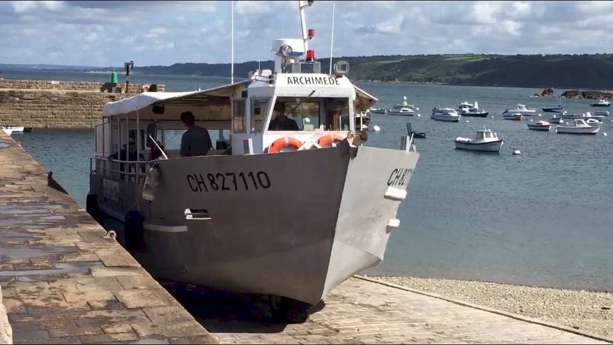
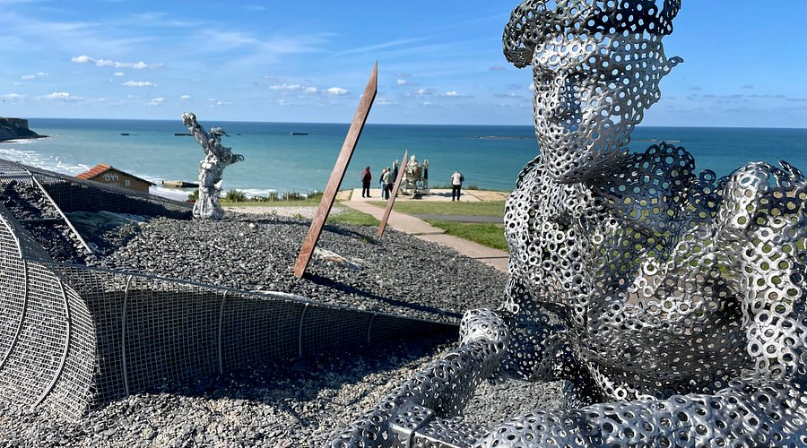

01
Mémoire
Chaque traversée est accompagnée d'un commentaire historique validé par le Mémorial de Caen. Témoignages, archives sonores, cartes d'époque — l'Histoire se vit sans la réduire.
D-Day Boat, c'est l'expérience amphibie qui vous emmène, sans quitter votre siège, des vestiges du port Mulberry aux sables d'Arromanches — là où débarqua le monde libre.
Le D-Day Boat est un bateau amphibie passager : il quitte le quai comme un bateau, traverse la baie d'Arromanches, puis remonte sur la plage pour vous déposer là où, un matin de juin 1944, l'Histoire s'est écrite dans le sable.

Imaginez : vous embarquez au port d'Arromanches. Le bateau glisse au large, longe les caissons Phoenix échoués depuis 1944, s'approche des pontons du Mulberry B encore debout. Puis — sans escale — il remonte doucement sur la plage.
Pas de transfert, pas de changement de navette. Le D-Day Boat est un navire à passagers amphibie, pensé pour la mémoire, le confort et l'émotion. Les commentaires audio, signés historiens locaux, rythment les deux heures de traversée.

En 17 jours, les Alliés ont assemblé au large d'Arromanches un port artificiel grand comme celui de Douvres. 115 caissons de béton, 10 km de jetées flottantes, 500 000 tonnes de matériel débarquées.
Quatre-vingts ans plus tard, les vestiges du Mulberry B tiennent toujours. De la mer, ils prennent une autre échelle : ils deviennent immenses, silencieux, cathédrales de béton posées sur l'eau. C'est cela que D-Day Boat vous donne à voir.
Ce port artificiel sera un miracle de technique, offrant aux Alliés la clé de la libération du continent.— Winston Churchill, mai 1944
Chaque traversée est accompagnée d'un commentaire historique validé par le Mémorial de Caen. Témoignages, archives sonores, cartes d'époque — l'Histoire se vit sans la réduire.
Un navire amphibie à passagers, conforme aux normes SOLAS, silencieux, électrique-hybride. La technologie au service de l'émotion — et de l'environnement maritime normand.
Des parcours dédiés aux scolaires, aux vétérans, aux familles. Un partenariat avec les musées du Débarquement pour tisser un récit complet, de Sword Beach à Utah Beach.
Des circuits de 90 minutes à la demi-journée, adaptés aux familles, aux groupes scolaires et aux visiteurs internationaux.

Embarquement au port, tour des vestiges du Mulberry B, remontée sur la plage Gold Beach. Commentaire bilingue FR/EN.

Trois plages, un même récit. Escales terrestres sur les plages britanniques et canadiennes, accompagnées d'un historien.
Réservez dès maintenant votre traversée sur le D-Day Boat. Tarifs groupes, scolaires et familles sur demande.